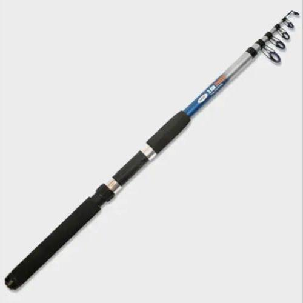
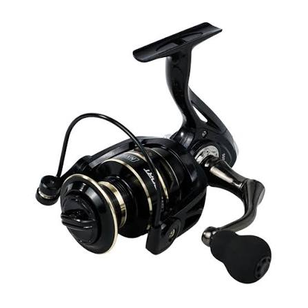
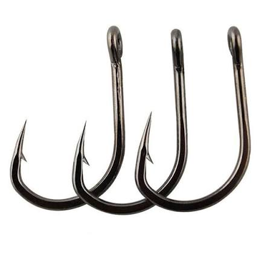
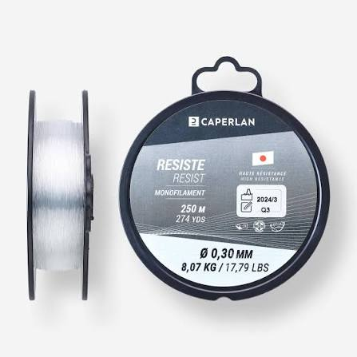
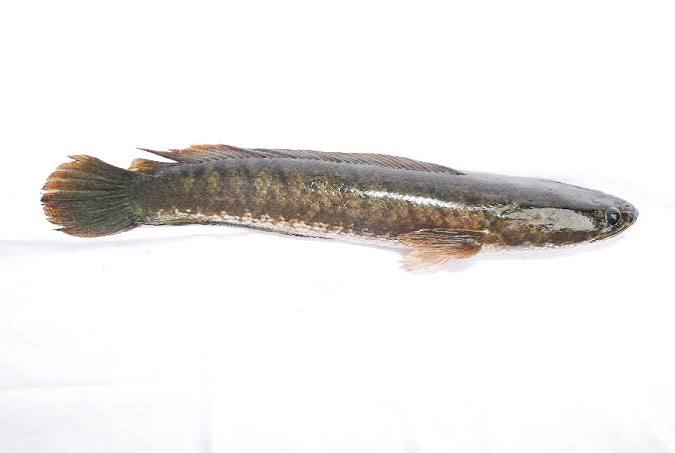
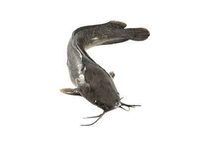
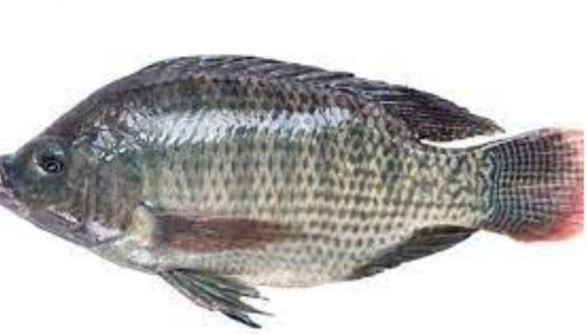
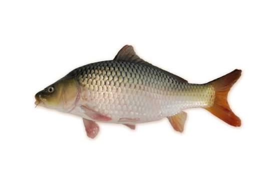

Kenali berbagai alat, jenis ikan, dan tips dalam dunia memancing.

Klik untuk melihat jenis joran

Klik untuk melihat jenis reel

Klik untuk melihat jenis kail

Klik untuk melihat jenis senar



